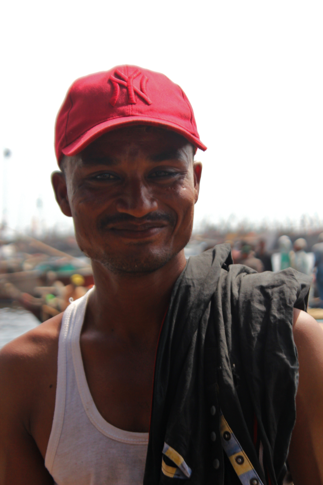

There are many things that define Karachi. Ask anyone they might say things such as: the food, the lights, and above all, they’ll speak of the vast body of water that touches the shores of the metropolitan area.
However, what we call ‘samandar´ (sea view), and what the people of Karachi view as a place of leisure and fun, is actually home to the Karachi Fish Harbor, also known to locals as the Fishery.
 The main door of the fishery, displaying the ‘Fishermen’s Co-operative Society, Karachi’ logo.
The main door of the fishery, displaying the ‘Fishermen’s Co-operative Society, Karachi’ logo.
The Karachi Harbor is famous as the biggest of its kind in all of Pakistan, catering to a total of 75 percent of the local fleet being consumed in the city of lights. These numbers are a direct result of the wide variety of boats and experienced fishermen. These fishermen get to work way before the sun even reaches its peak rise, setting out their sails in search of their catch of the day.
 Fishermen prepare their boats and gather supplies for a day of fishing out in the waters.
Fishermen prepare their boats and gather supplies for a day of fishing out in the waters.
Rough hands that speak of years of experience, dark skin that shows the reality of working under the sun for 12+ hours and a face that is full of determination to earn a livelihood are a few words that can describe the fishermen at the harbor, who single-handedly carry the fishing industry on their backs.
The job is not as easy as it may seem from the perspective of an outsider. What seems like a normal routine of setting out to sea and coming back with a caching net full of fishes, is actually hours of roaming the vast sea, net put out, only to collect a few fishes.

Captured here is 34 year old Azam, who has been in the fishing business ever since he was a teenager.
However, at the end of the day, more often than not, the long hours spent fishing and boating under the sun are worth it as the fishermen return to port to drop off their catch of the day, ready to be distributed and sold to sellers.
 A cart carrying baskets is driven to the dock where fishermen unload their catch.
A cart carrying baskets is driven to the dock where fishermen unload their catch.
 The warehouse where fishermen spread out the fish, ready to be distributed to vendors and sellers.
The warehouse where fishermen spread out the fish, ready to be distributed to vendors and sellers.
The fishes presented in the warehouse are bought by vendors and sellers in large quantities, often in the form of Styrofoam boxes.
 A vendor proudly displaying the kind of fish he is selling.
A vendor proudly displaying the kind of fish he is selling.
After this purchasing process, the vendors then proceed to selling these fishes to the general public at their own rates.
 Two large boxes of freshly caught fishes bought by a vendor.
Two large boxes of freshly caught fishes bought by a vendor.
While the fishermen, and the vendors are an important part of the fishing industry, there is another person who is responsible for protecting the fishes from a possible ‘fish-heist’, that may occur at any given moment: the security guard.
 60-year-old Moazzam, the security guard at the fishery.
60-year-old Moazzam, the security guard at the fishery.
“People think that my job here at the fishery is redundant, but they’d be shook to know how many thieves come in to pick up a fish or two for free!” Moazzam explained, while describing the importance of his job at the fishery.
The fishermen are not just the rulers of the Karachi port though, beyond this port lies the famous Kemari. Most people know Kemari as the district that is part of Karachi, but to the fishermen, Kemari is no less than a fishing haven.
 Rows of bikes belonging to the fishermen stand just outside the entrance to the Kemari port.
Rows of bikes belonging to the fishermen stand just outside the entrance to the Kemari port.
 Fleets of colorful boats lined up at the Kemari port.
Fleets of colorful boats lined up at the Kemari port.
 A young boat owner can be seen cleaning and preparing his boat for a long day ahead.
A young boat owner can be seen cleaning and preparing his boat for a long day ahead.
 Locals often use shrimp as bait tied to tiny hooks.
Locals often use shrimp as bait tied to tiny hooks.
 Since locals usually sit near the edge, they are only able to catch smaller fishes.
Since locals usually sit near the edge, they are only able to catch smaller fishes.
 A boat made of heavy iron occupied by fishermen on its way for fishing.
A boat made of heavy iron occupied by fishermen on its way for fishing.
 A fisherman sorting through the icebox to discard fishes that cannot be sold.
A fisherman sorting through the icebox to discard fishes that cannot be sold.
 A temple in Manora island, which speaks of the religious diversity on the island.
A temple in Manora island, which speaks of the religious diversity on the island.
 A construction site opposite to the temple. This construction site speaks of the island’s development).
A construction site opposite to the temple. This construction site speaks of the island’s development).